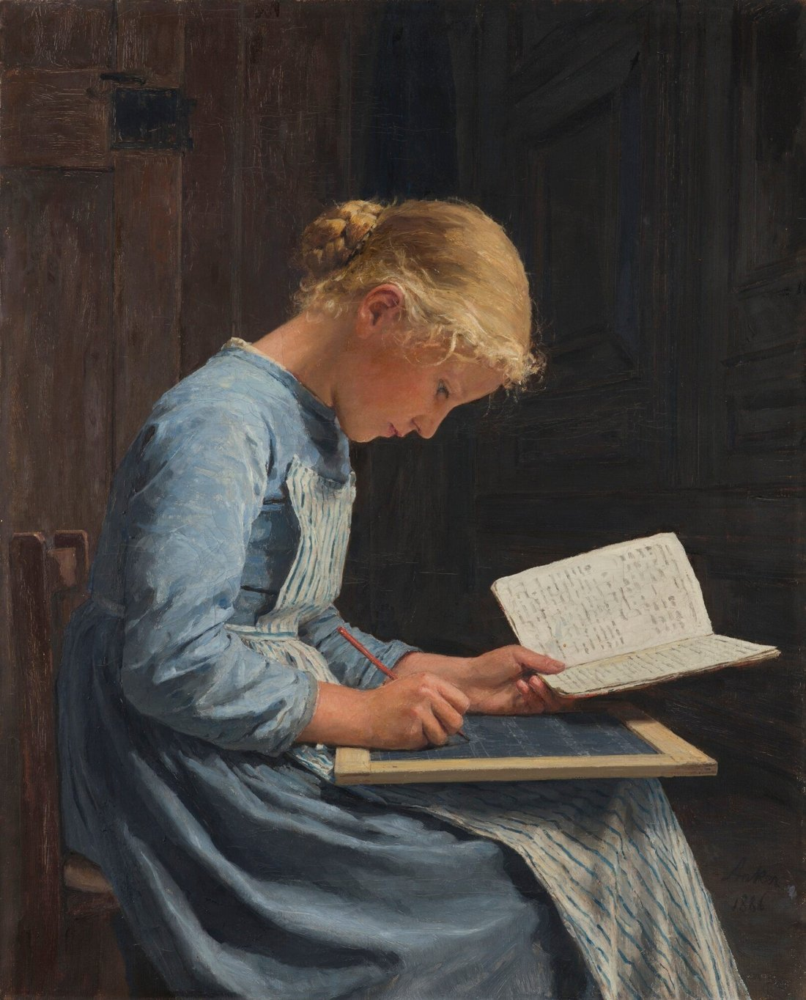

Road map
Lesson of 55 minutes, timed for 52 minutes. 5 lessons.
-
Lesson 1 · Deconstruction
52 min
Read the model, colour-code the structure, retrace the PEEL paragraphs, and collect the vocabulary and punctuation.
- 8 min · Recap
- 12 min · Read the model
- 12 min · Colour-code the structure
- 12 min · PEEL in the body paragraphs
- 8 min · Vocabulary, grammar and punctuation hunt
- Written record. Hook, research question, two topic sentences.
- Participation. everyone speaks at least once: one linker or one example each.
- Homework for next lesson. Copy the four colour codes, learn three words.
Stopping point. End of this lesson. Next time: the five parts of the essay and categories 1, 2 and 3.
Emergency exit · 8 min. If time runs short at this stopping point, we condense: we dictate a short written record (hook, research question, deux topic sentences) ; a round of the class, one linker or one example each, so that everyone has spoken at least once; the homework (copy the four colour codes, learn three words) is written on the board.
-
Lesson 2 · How the essay is built
52 min
Understand the five parts of the essay and sort ideas into categories 1, 2 and 3.
- 8 min · Recap and the five-part plan
- 14 min · The five parts, step by step, and the exercise on the model
- 15 min · Organising ideas by categories 1, 2, 3
- 10 min · Sort these ideas
- 5 min · Written record and instructions
- Written record. The five parts and what becomes of each category.
- Participation. everyone speaks at least once: one idea placed in 1, 2 or 3, each in turn.
- Homework for next lesson. Fill in the category grid for the topic.
Stopping point. End of this lesson. Next time: starters, linking words and the toolbox.
Emergency exit · 8 min. If time runs short at this stopping point, we condense: we dictate the five parts and what becomes of each category; a round of the class, one idea placed in 1, 2 or 3, each in turn; the homework (fill in the category grid for the topic) is written on the board.
-
Lesson 3 · Starters, linkers and the language toolbox
52 min
Learn sentence starters and linking words, work on grammar and punctuation.
- 14 min · Sentence starters and exercise
- 16 min · Linking words and exercises
- 14 min · Expanding your vocabulary, B2 grammar, punctuation check
- 8 min · Written record et homework instruction
- Written record. One starter per part and three linkers.
- Participation. everyone speaks at least once: one starter said out loud by each student.
- Homework for next lesson. Three sentences with soft power, heritage and glocalization, one sentence in the passive.
Stopping point. End of this lesson. Next time: the brainstorming and the first draft.
Emergency exit · 8 min. If time runs short at this stopping point, we condense: we dictate one starter per part and three linkers; a round of the class, one starter said out loud by each student; the homework (three sentences with soft power, heritage and glocalization, one sentence in the passive) is written on the board.
-
Lesson 4 · Brainstorming and guided planning
52 min
Sort ideas by category, fill in the grid, write a first draft of 250 to 300 words.
- 8 min · Recap and tools from lesson 3
- 12 min · Grid for categories 1, 2 and 3
- 12 min · Guided planning grid
- 20 min · First draft, 250 to 300 words
- Written record. The five-part plan to copy onto the sheet.
- Participation. everyone speaks at least once: the hook sentence or the research question, each in turn.
- Homework for next lesson. Finish the first draft and the flashcards.
Stopping point. The first draft can be finished at home. Before the assessment, students make their flashcards.
Emergency exit · 8 min. If time runs short at this stopping point, we condense: we dictate the five-part plan to copy onto the sheet ; a round of the class, the hook sentence or the research question, each in turn ; the homework (finish the first draft and the flashcards) is written on the board.
-
Lesson 5 · Peer review and summative assessment
52 min
Reread a classmate's draft, then write the assessed essay, with the rubric out of 20.
- 8 min · Recap and a reminder of the grid
- 12 min · Peer review
- 32 min · Timed essay, 250 à 300 words
- Written record. The essay plan in five points.
- Participation. everyone speaks at least once: a peer-review sentence (one point from the rubric) each.
- Homework for next lesson. Finish or reread the essay with the rubric.
Stopping point. End of the sequence. Homework: reread the essay with the rubric.
Emergency exit · 8 min. If time runs short at this stopping point, we condense: we dictate the essay plan in five points ; a round of the class, a peer-review sentence (one point from the rubric) each ; the homework (finish or reread the essay with the rubric) is written on the board.
Student sheet : PDF · DOCX · ODT · Modèle de flashcards vierges : PDF · DOCX · ODT
Writing an Essay
General lycée · Première and Terminale · tronc commun B1+ towards B2 · spécialité LLCER vers C1. Prompt: “Does globalization necessarily lead to cultural uniformity?” · Length: 250 to 300 words.
Programme axis
Axis 1. Identities and exchanges (cycle terminal theme: Founding gestures and worlds in motion). Première and Terminale, general pathway.
CEFR level
Tronc commun: B1+ towards B2 in Première, B2 in Terminale. Spécialité LLCER anglais: towards C1 by the end of Terminale. Guided support remains available for students still consolidating B1+.
Key question
Does globalization necessarily lead to cultural uniformity?
Language aims
Colour-code a model, use PEEL paragraphs, organise ideas in three categories, use sentence starters and linking words, impersonal passives and inversion, English punctuation, plan a dialectical essay, apply a /20 rubric.
Cultural anchor
Albert Anker, Appliquée (Fleissig), 1886, private collection, public domain · cultural globalization, soft power, glocalization, linguistic heritage.
Official curriculum (verified)
Programme of modern languages for Première and Terminale, general and technological pathways: Bulletin officiel spécial n° 1 of 22 January 2019 (order of 17 January 2019, NOR MENE1901585A). Theme of the cycle terminal: Founding gestures and worlds in motion. This sequence works Axis 1, Identities and exchanges.
LVA and LVB are assessed through continuous assessment for the baccalauréat. In the tronc commun, LVA aims at B2 in Terminale (B1+ towards B2 in Première). The spécialité LLCER anglais aims towards C1 by the end of Terminale (BO spécial n° 1 of 22 January 2019). Sources: BO special n° 1 (22 Jan 2019) · éduscol, voie GT.

A young student absorbed in written work: concentration, draft after draft. Writing an essay still asks for the same patience, on paper or on a screen. Image: public domain (the artist died in 1910) · Wikimedia Commons
Session 1 · Deconstruction
What do you already know about writing an argued essay? Name one linker and one example you could use on this topic.
Possible linkers: On the one hand, However, Consequently, To conclude. Examples must be precise (a tool, a company, a cultural fact).
Read the model
Prompt: “Does globalization necessarily lead to cultural uniformity?” · Target length: 250 to 300 words.
Model essay · about 265 words
From Paris to Tokyo, teenagers wear the same trainers, stream the same hits and open the same apps. This shared everyday life raises a sharp question: does global interconnectedness wipe out local identities?
On the one hand, economic globalization clearly pushes cultural standardization. Multinational companies, often carried by Western soft power, sell one consumer lifestyle worldwide. For instance, Hollywood blockbusters and streaming platforms such as Netflix frequently outshine national film industries. Consequently, younger generations borrow English phrases and global habits, sometimes at the expense of their own linguistic heritage.
On the other hand, globalization also offers powerful tools to celebrate and export local cultures. Rather than pure assimilation, exchanges often produce “glocalization,” where global trends meet local traditions. South Korean K-Pop and Japanese manga, for example, have won worldwide audiences while staying rooted in their own cultures. What is more, the internet helps minority communities revive endangered languages and share their heritage far beyond their borders.
To conclude, globalization exerts strong homogenizing pressure, yet it does not make cultural uniformity inevitable. It creates a living tension between global influence and local pride. In the end, cultural diversity survives when societies choose to protect their roots in an interconnected world.
About 265 words
1 Colour-code the structure
On paper or on screen
- Blue: underline the hook in the introduction.
- Red: underline the research question in the introduction.
- Green: highlight the topic sentence at the start of each body paragraph.
- Yellow: circle the linking words (On the one hand, Consequently, Furthermore…).
Hook: From Paris to Tokyo… same apps.
Research question: does global interconnectedness wipe out local identities?
Topic sentences: “On the one hand, economic globalization clearly pushes cultural standardization.” / “On the other hand, globalization also offers powerful tools to celebrate and export local cultures.”
Linkers: On the one hand, For instance, Consequently, On the other hand, Rather than, What is more, To conclude, In the end.
2 PEEL in the body paragraphs
For each body paragraph, complete: Point · Explanation · Example · Link back to the prompt.
| Paragraph | Point | Example | Result |
|---|---|---|---|
| Body 1 (standardization) | |||
| Body 2 (resistance) |
Type key words. Check accepts several correct answers.
Body 1: Point = standardization through soft power · Example = Hollywood / Netflix · Result = pressure on linguistic heritage.
Body 2: Point = glocalization / export of local cultures · Example = K-Pop, manga · Result = revival of minority languages and heritage shared online.
3 Vocabulary, grammar and punctuation hunt
- soft power
- heritage (or linguistic heritage)
- endangered
- Example: “often carried by Western soft power”
- No: English puts no space before : ; ? !
Homework
- Copy the four colour codes into your notebook with one example sentence each from the model.
- Learn the three vocabulary items from Exercise 3.
See the answer keys of Exercises 1 and 3.
Session 2 · How the essay is built
From Session 1: what is the research question of the model, and what are the two sides of the debate?
See Session 1 answer keys: the model question and the Pros / Cons structure.
Methodology: how to build the essay
- Hook: a striking observation, a global trend or a paradox.
- Definition and research question: define globalization briefly, then rephrase the prompt as a clear question.
- Body paragraphs (two or three): PEEL: Point, Explanation, Example, Link back to the prompt.
- Conclusion: answer with nuance, then open to a broader perspective (for example digital platforms and minority languages).
The five parts of the essay, step by step
A B2 English essay on a discussion prompt is a short argued text (here, 250 to 300 words). It is clearer if you can name five jobs the text must do. In a short essay, some jobs share a paragraph. That is normal. What matters is that none of the jobs is missing.
- Introduction. Open the door. Give a hook: a precise observation, a contrast, or a paradox that makes the reader want the question. Keep it short: one or two sentences. Do not start with a dictionary sentence such as “Globalization is a very important topic.”
- Presentation of the topic. Set the terms and the stakes. Define only what you will need (one key word is enough). Rephrase the prompt as a clear research question. You may hint at the line you will follow, without giving away the full answer. In a 250 to 300-word essay, this usually stays in the same paragraph as the hook.
- Argumentation. This is the body of the essay. Write two (sometimes three) paragraphs. Each paragraph does one job, in this order (PEEL): a point (the idea of the paragraph), an explanation (why this idea is valid), an example (a precise fact, work, place, or practice), and a link back to the question. A common plan on this prompt is dialectical: one paragraph on the pressure towards uniformity, one paragraph on resistance, adaptation, or local vitality.
- Synthesis. Bring the two sides together. Show the tension, the condition, or the limit: for example, globalization puts pressure on local cultures, yet it also gives them a stage, provided people choose to use it. This can be a short paragraph of its own, or the first movement of the conclusion. It is not a third random example, and it is not a simple repeat of “on the one hand / on the other hand.”
- Conclusion. Answer the question, with nuance. Then open briefly: a consequence, a responsibility, or a further question (for instance, the role of schools or of public policy). Do not add a new argument, and do not copy the introduction word for word.
How to read the model in Session 1 with these five jobs: the first paragraph does both the introduction and the presentation of the topic; the next two paragraphs are the argumentation; the last paragraph begins with a synthesis (“yet it does not make cultural uniformity inevitable”) and ends with the conclusion (“cultural diversity survives when societies choose to protect their roots”).
2 Name the job of each part in the model
Look back at the model essay. Match each extract to the job it does.
- Hook: the shared trainers, hits and apps (first sentence).
- Presentation of the topic: the question about interconnectedness and local identities (end of paragraph 1).
- Argumentation: the two body paragraphs, starting from “On the one hand” and “On the other hand.”
- Synthesis: “yet it does not make cultural uniformity inevitable. It creates a living tension…”
- Conclusion: “In the end, cultural diversity survives when…”
Organising ideas by categories 1, 2, 3
Before you write, you brainstorm. Then you sort. Each idea must earn its place in the essay. The method is simple, and it works on any discussion prompt.
- Write down every idea, example and phrase you can think of, in any order. Do not edit yet.
- Sort them into three categories:
- Category 1: ideas that support a first line of argument (on this prompt: the pressure towards uniformity).
- Category 2: ideas that support a second line of argument (here: resistance, adaptation, or the export of local cultures).
- Category 3: ideas that help you bring the two sides together (a condition, a limit, a choice, a tool that cuts both ways). These feed the synthesis, and they help you answer with nuance.
- Set aside anything that does not serve the question, however interesting it looks.
- From category 1 you build the first body paragraph (one point, one explanation, one precise example, one link). From category 2 you build the second. From category 3 you shape the synthesis and the close of the conclusion. One category, one job in the essay.
Worked example on the prompt “Does globalization necessarily lead to cultural uniformity?”
| Category | Ideas (key words only) | Where they go in the essay |
|---|---|---|
| 1. Pressure towards uniformity | same apps and brands; Hollywood and streaming; English phrases at the expense of linguistic heritage; one consumer lifestyle | Argumentation, body paragraph 1 |
| 2. Local vitality and glocalization | K-Pop; manga; global trends meeting local traditions; minority languages shared online | Argumentation, body paragraph 2 |
| 3. The meeting point | the same internet can standardise or revive; diversity survives when societies choose to protect their roots; policy and education can make a difference | Synthesis, then the close of the conclusion |
3 Sort these ideas into categories
Choose 1, 2, 3, or “set aside” if the idea does not serve this prompt.
- 1 (uniformity): streaming platforms; global brands; English loanwords.
- 2 (local vitality): K-Pop; manga; a minority language online.
- 3 (meeting point): diversity survives if people choose to protect it; the same platforms can standardise or give a stage.
- Set aside: the number of cars (it does not answer this cultural question).
Session 3 · Starters, linkers and the language toolbox
Sentence starters for each part
Use these as opening moves, then write your own sentence. Do not stack three starters in a row. One clear start is enough.
| Part | Key sentence starters |
|---|---|
| Introduction (hook) | From … to …, people now… · It has become commonplace to… · A closer look at … is enough to… |
| Presentation of the topic | This raises a sharp question: … · Before answering, it is worth defining… · The issue is not only whether…, but how… |
| Argumentation | On the one hand,… · A first argument is that… · This can be explained by… · For instance,… / To illustrate this,… · On the other hand,… · What is more,… |
| Synthesis | These two tendencies are not mutually exclusive. · What emerges is a tension between … and… · Taken together, these examples suggest that… · In fact, … only if… |
| Conclusion | To conclude,… · In the end,… · The question, then, is not … but… · This invites us to… |
4 Which part does this starter open?
- From Paris to Tokyo: Introduction (hook).
- This raises a sharp question: Presentation of the topic.
- On the other hand / For instance: Argumentation.
- Taken together, these examples suggest that: Synthesis.
- To conclude: Conclusion.
Linking words between ideas and parts
A linker is a hinge. It shows how one idea follows from another, and how one part of the essay hands over to the next. Put a comma after an introductory linker: However, … / Consequently, …
| Job | Useful linkers |
|---|---|
| Add an idea | What is more, · Furthermore, · In addition, · Moreover, |
| Contrast or the other side | On the one hand, / On the other hand, · However, · Yet · Whereas · Rather than |
| Give an example | For instance, · For example, · Such as · To illustrate this, |
| Cause or result | Consequently, · As a result, · Therefore, · This can be explained by |
| Concede, then return | Granted, · It is true that… · Nevertheless, · That said, |
| Move into the synthesis | Taken together, · In fact, · Ultimately, · These two tendencies… |
| Close the essay | To conclude, · In the end, · All in all, |
5 Linking words in a short paragraph
Choose the linker that fits the job of each gap.
On the one hand, streaming platforms spread the same series worldwide. national films often struggle to find an audience. some local productions reach viewers abroad through those same platforms. globalization puts pressure on local cultures, yet it also offers them a stage.
Consequently, (result) · On the other hand, (the other side) · To conclude, (close and synthesis: pressure, yet a stage).
6 What is the job of each linker?
What is more: add an idea. For instance: give an example. However: contrast. As a result: cause or result. In the end: close the essay.
Language toolbox
Expanding your vocabulary
cultural homogenization, soft power, heritage, assimilation, grassroots movements, standardization, to preserve, consumer lifestyle, linguistic diversity, glocalization.
B2 grammar
- Impersonal passive: It is widely acknowledged that… / It could be argued that…
- Inversion for emphasis: Not only does globalization spread Western brands, but it also…
English punctuation
No space before colons (:), semicolons (;), question marks (?) or exclamation marks (!). Place a comma after an introductory linker: However, … / Furthermore, … / Consequently, …
1 Punctuation check
- However, globalization continues.
- This raises a question: does diversity survive?
Homework
- Write three sentences with soft power, heritage and glocalization.
- Rewrite one sentence from the model using an impersonal passive.
Example passive: It could be argued that streaming platforms overshadow national cinema.
Session 4 · Brainstorming and guided planning
Name two grammar tools from Session 3 that you will use in your draft.
Examples: modals, gerunds after prepositions, impersonal passives, inversion, capital I, English punctuation.
From categories to the plan
Fill this grid first, with key words only. Then complete the guided planning grid below. Each category must lead to an element of the essay.
| Category | My ideas and one precise example | Element of the essay |
|---|---|---|
| 1 | Body paragraph 1 (argumentation) | |
| 2 | Body paragraph 2 (argumentation) | |
| 3 | Synthesis and the close of the conclusion |
Guided planning grid
Fill the grid before you draft. Keep key words only.
| Section | Guiding questions | My notes |
|---|---|---|
| Introduction | Hook? Research question? | |
| Body 1 (yes / pressure) | How does globalization standardize? Which example? | |
| Body 2 (nuance) | How do local cultures resist or adapt? Counter-example? | |
| Conclusion | Nuanced verdict? Broader opening? |
Homework
- Finish the planning grid.
- Write a first draft of 250 to 300 words from your grid (not from the model).
Compare your structure with the model: hook, question, two PEEL paragraphs, nuanced conclusion.
My bristol flashcards · how to use them
Principle: each student makes their own cards by hand, on bristol cards. Writing the word is already a way of learning it. The pack stays in their bag: they can revise anywhere, with no screen.
Materials
A7 bristol cards (74 × 105 mm), or A6 bristols cut in half. Coloured felt-tip pens. An elastic band or an envelope for the pack. A small cardboard box with three compartments for practice (a shoe box with two dividers is enough). You can also print the blank template and cut it out.
Colour code
| Category | Pen colour |
|---|---|
| Vocabulary | green |
| Grammar | red |
| Linkers | blue |
| Structure (sentence starters) | purple |
When to make the cards in the sequence
| When | Cards to make |
|---|---|
| During steps 1 to 3 | A few cards, as the work goes on, for the words, structures and starters that are still fragile. |
| Before step 4 | Finish the pack, then practise in pairs, with three boxes. |
Practice in pairs, with three boxes
A shows the front, B gives the meaning and a sentence. If the card is right, it moves on one box. If it is wrong, it goes back to box 1. Target before the assessment: 12 cards in box 3.
Grid · my pack of cards /10
| Criterion | Points |
|---|---|
| 15 cards or more, with the colour code respected | / 2 |
| Clear handwriting, correct spelling on the front and the back | / 3 |
| Un exemple précis au verso (pas seulement une traduction) | / 3 |
| Entraînement en trois boîtes, avec 12 cartes en boîte 3 | / 2 |
My Flashcards
You make your own cards. This page shows you how. There is no ready-made deck to memorise.
| What to write | |
|---|---|
| Front | The English word, linker, starter or structure, in the colour of its category. |
| Back | The French and one short example of your own (a sentence you could use in the essay). |
| Corner | The category: Vocabulary, Grammar, Linkers, or Structure. |
| Check | Can I give the French and an example without turning the card over? |
Model cards
soft power
influence culturelle sans la force · Hollywood films are often carried by Western soft power.
On the other hand,
d'un autre côté · opens the second body paragraph, when you change sides.
This raises a sharp question:
amorce pour présenter le sujet · followed by your research question, no space before the colon.
Word and structure bank: what to put on cards
Choose items you still hesitate on. One item per card. Do not copy the whole list onto one card.
- Vocabulary: cultural homogenization, soft power, heritage, assimilation, grassroots movements, standardization, to preserve, consumer lifestyle, linguistic diversity, glocalization, endangered.
- Grammar: It is widely acknowledged that… / It could be argued that… / Not only does…, but it also…
- Linkers: On the one hand, / On the other hand, / Consequently, / What is more, / Rather than / In the end, / Taken together,
- Structure: one starter for the hook, one for the research question, one for the synthesis, one for the conclusion.
Checklist
- I have at least 15 cards, in four colours.
- Each front has one English item, written clearly.
- Each back has the French and a short example I could use in my essay.
- I have practised in two, with three boxes, and I can move 12 cards to box 3.
Session 5 · Peer review and summative assessment
Before you write: what goes in the introduction, and what goes in the conclusion?
Introduction: hook or context, debate, question or opinion. Conclusion: answer with nuance and a short opening or recommendation.
Peer review
Swap drafts. Check: clear research question, two developed paragraphs with examples, English punctuation, word count.
Summative rubric · out of 20
| Criterion | What earns full marks (B2) | Score |
|---|---|---|
| Task and length | Nuanced research question; 250 to 300 words | / 5 |
| Structure and coherence | Dialectical plan; advanced linkers (whereas, what is more, ultimately) | / 5 |
| Vocabulary | Rich, precise, abstract lexis of the axis | / 5 |
| Grammar and punctuation | Complex structures (passive, inversion); no word-for-word calques; English punctuation | / 5 |
1 Timed essay
Write your own essay on the prompt. Target: 250 to 300 words.
Model essay · about 265 words
From Paris to Tokyo, teenagers wear the same trainers, stream the same hits and open the same apps. This shared everyday life raises a sharp question: does global interconnectedness wipe out local identities?
On the one hand, economic globalization clearly pushes cultural standardization. Multinational companies, often carried by Western soft power, sell one consumer lifestyle worldwide. For instance, Hollywood blockbusters and streaming platforms such as Netflix frequently outshine national film industries. Consequently, younger generations borrow English phrases and global habits, sometimes at the expense of their own linguistic heritage.
On the other hand, globalization also offers powerful tools to celebrate and export local cultures. Rather than pure assimilation, exchanges often produce “glocalization,” where global trends meet local traditions. South Korean K-Pop and Japanese manga, for example, have won worldwide audiences while staying rooted in their own cultures. What is more, the internet helps minority communities revive endangered languages and share their heritage far beyond their borders.
To conclude, globalization exerts strong homogenizing pressure, yet it does not make cultural uniformity inevitable. It creates a living tension between global influence and local pride. In the end, cultural diversity survives when societies choose to protect their roots in an interconnected world.
About 265 words
Homework
- Revise your essay with the rubric.
- Underline one passive, one inversion (if any) and five linkers.
Expanding your vocabulary
cultural homogenization, soft power, heritage, assimilation, standardization, glocalization, linguistic diversity, to preserve, consumer lifestyle, grassroots movements